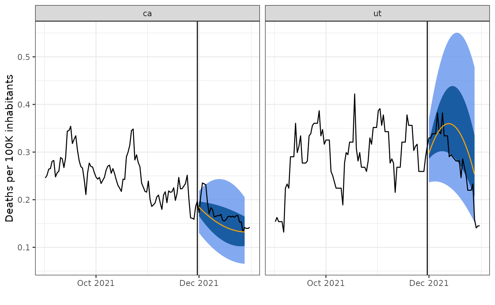
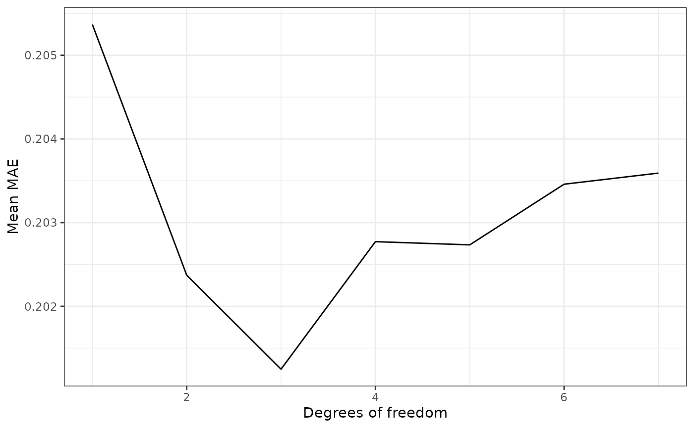
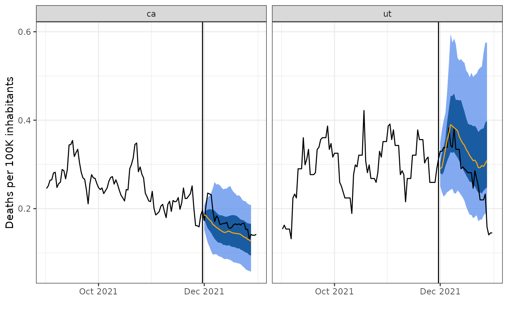
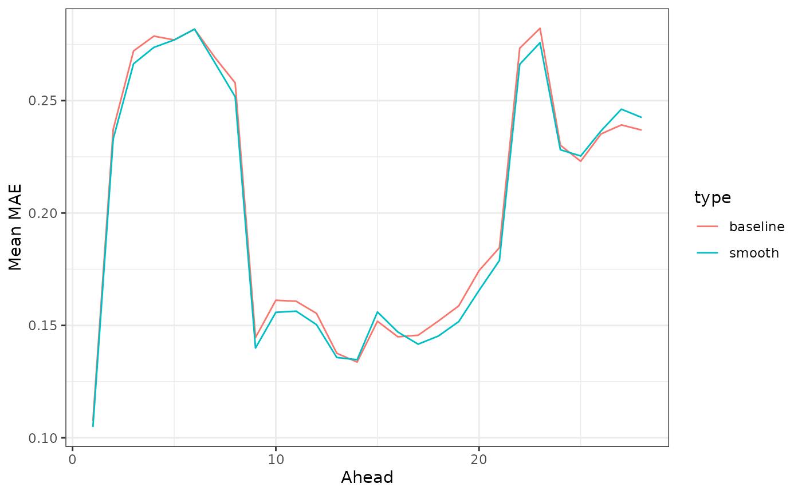
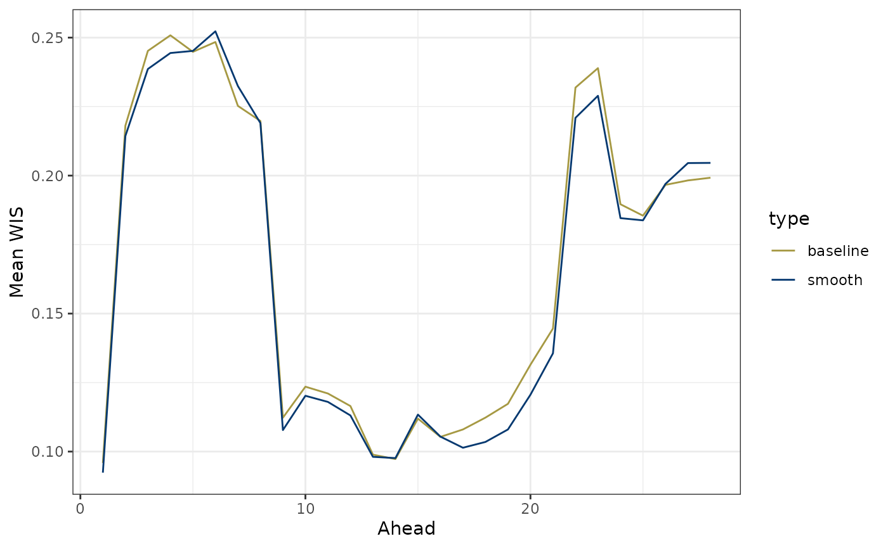

Introducing smooth quantile regression
Whereas other time-series forecasting examples in this package have used (direct) models for single horizons, in multi-period forecasting, the goal is to (directly) forecast several horizons simultaneously. This is useful in epidemiological applications where decisions are based on the trend of a signal.
The idea underlying smooth quantile regression is that set forecast targets can be approximated by a smooth curve. This novel approach from Tuzhilina et al., 2022 enforces smoothness across the horizons and can be applied to point estimation by regression or interval prediction by quantile regression. Our focus in this vignette is the latter.
Built-in function for smooth quantile regression and its parameters
The built-in smooth quantile regression function,
smooth_quantile_reg() provides a model specification for
smooth quantile regression that works under the tidymodels framework. It
has the following parameters and default values:
smooth_quantile_reg(
mode = "regression",
engine = "smoothqr",
outcome_locations = NULL,
quantile_levels = 0.5,
degree = 3L
)For smooth quantile regression, the type of model or
mode is regression.
The only engine that is currently supported is
smooth_qr() from the smoothqr
package.
The outcome_locations indicate the multiple horizon (ie.
ahead) values. These should be specified by the user.
The quantile_levels parameter is a vector of values that
indicates the quantiles to be estimated. The default is the median (0.5
quantile).
The degree parameter indicates the degree of the
polynomials used for smoothing of the response. It should be no more
than the number of aheads. If the degree is precisely equal to the
number of aheads, then there is no smoothing. To better understand this
parameter and how it works, we should look to its origins and how it is
used in the model.
Model form
Smooth quantile regression is linear auto-regressive, with the key feature being a transformation that forces the coefficients to satisfy a smoothing constraint. The purpose of this is for each model coefficient to be a smooth function of ahead values, and so each such coefficient is set to be a linear combination of smooth basis functions (such as a spline or a polynomial).
The degree parameter controls the number of these
polynomials used. It should be no greater than the number of responses.
This is a tuning parameter, and so it can be chosen by performing a grid
search with cross-validation. Intuitively, \(d
= 1\) corresponds to the constant model, \(d = 2\) gives straight line forecasts,
while \(d = 3\) gives quadratic
forecasts. Since a degree of 3 was found to work well in the tested
applications (see Section 9 of Tuzhilina et al., 2022), it
is the default value.
Demonstration of smooth quantile regression
We will now apply smooth quantile regression on the real data used for COVID-19 forecasting. The built-in dataset we will use is a subset of JHU daily data on state cases and deaths. This sample data ranges from Dec. 31, 2020 to Dec. 31, 2021.
edf <- case_death_rate_subsetWe will set the forecast date to be November 30, 2021 so that we can
produce forecasts for target dates of 1 to 28 days ahead. We construct
our test data, tedf from the days beyond this.
We will use the most recent 3 months worth of data up to the forecast date for training.
And for plotting our focus will be on a subset of two states - California and Utah.
geos <- c("ut", "ca")Suppose that our goal with this data is to predict COVID-19 death rates at several horizons for each state. On day \(t\), we want to predict new deaths \(y\) that are \(a = 1,\dots, 28\) days ahead at locations \(j\) using the death rates from today, 1 week ago, and 2 weeks ago. So for each location, we’ll predict the median (0.5 quantile) for each of the target dates by using \[ \hat{y}_{j}(t+a) = \alpha(a) + \sum_{l = 0}^2 \beta_{l}(a) y_{j}(t - 7l) \] where \(\beta_{l}(a) = \sum_{i=1}^d \theta_{il} h_i(a)\) is the smoothing constraint where \({h_1(a), \dots, h_d(a)}\) are the set of smooth basis functions and \(d\) is a hyperparameter that manages the flexibility of \(\beta_{l}(a)\). Remember that the goal is to have each \(\beta_{l}(a)\) to be a smooth function of the aheads and that is achieved through imposing the smoothing constraint.
Note that this model is intended to be simple and straightforward. Our only modification to this model is to add case rates as another predictive feature (we will leave it to the reader to incorporate additional features beyond this and the historical response values). We can update the basic model incorporate the \(k = 2\) predictive features of case and death rates for each location j, \(x_j(t) = (x_{j1}(t), x_{j2}(t))\) as follows:
\[ \hat{y}_{j}(t+a) = \alpha(a) + \sum_{k = 1}^2 \sum_{l = 0}^2 \beta_{kl}(a) x_{jk}(t - 7l) \] where \(\beta_{kl}(a) = \sum_{i=1}^d \theta_{ikl} h_i(a)\).
Now, we will create our own forecaster from scratch by building up an
epi_workflow (there is no canned forecaster that is
currently available). Building our own forecaster allows for
customization and control over the pre-processing and post-processing
actions we wish to take.
The pre-processing steps we take in our epi_recipe are
simply to lag the predictor (by 0, 7, and 14 days) and lead the response
by the multiple aheads specified by the function user.
The post-processing layers we add to our frosting are
nearly as simple. We first predict, unnest the prediction list-cols,
omit NAs from them, and enforce that they are greater than 0.
The third component of an to an epi_workflow, the model,
is smooth quantile regression, which has three main arguments - the
quantiles, aheads, and degree.
After creating our epi_workflow with these components,
we get our test data based on longest lag period and make the
predictions.
We input our forecaster into a function for ease of use.
smooth_fc <- function(x, aheads = 1:28, degree = 3L, quantiles = 0.5, fd) {
rec <- epi_recipe(x) %>%
step_epi_lag(case_rate, lag = c(0, 7, 14)) %>%
step_epi_lag(death_rate, lag = c(0, 7, 14)) %>%
step_epi_ahead(death_rate, ahead = aheads)
f <- frosting() %>%
layer_predict() %>%
layer_unnest(.pred) %>%
layer_naomit(distn) %>%
layer_add_forecast_date() %>%
layer_threshold(distn)
ee <- smooth_quantile_reg(
quantile_levels = quantiles,
outcome_locations = aheads,
degree = degree
)
ewf <- epi_workflow(rec, ee, f)
the_fit <- ewf %>% fit(x)
latest <- get_test_data(rec, x, fill_locf = TRUE)
preds <- predict(the_fit, new_data = latest) %>%
mutate(forecast_date = fd, target_date = fd + ahead) %>%
select(geo_value, target_date, distn, ahead) %>%
pivot_quantiles_wider(distn)
preds
}Notice that we allow the function user to specify the aheads, degree, and quantile as they may want to change these parameter values. We also allow for input of the forecast date as we fixed that at the onset of this demonstration.
We now can produce smooth quantile regression predictions for our problem:
smooth_preds <- smooth_fc(edf, fd = fd)
smooth_preds#> # A tibble: 1,568 × 4
#> geo_value target_date ahead `0.5`
#> <chr> <date> <int> <dbl>
#> 1 ak 2021-12-01 1 0.323
#> 2 ak 2021-12-02 2 0.347
#> 3 ak 2021-12-03 3 0.369
#> 4 ak 2021-12-04 4 0.389
#> 5 ak 2021-12-05 5 0.407
#> 6 ak 2021-12-06 6 0.422
#> 7 ak 2021-12-07 7 0.436
#> 8 ak 2021-12-08 8 0.448
#> 9 ak 2021-12-09 9 0.458
#> 10 ak 2021-12-10 10 0.465
#> # ℹ 1,558 more rowsMost often, we’re not going to want to limit ourselves to just predicting the median value as there is uncertainty about the predictions, so let’s try to predict several different quantiles in addition to the median:
several_quantiles <- c(.1, .25, .5, .75, .9)
smooth_preds <- smooth_fc(edf, quantiles = several_quantiles, fd = fd)
smooth_preds#> # A tibble: 1,568 × 8
#> geo_value target_date ahead `0.1` `0.25` `0.5` `0.75` `0.9`
#> <chr> <date> <int> <dbl> <dbl> <dbl> <dbl> <dbl>
#> 1 ak 2021-12-01 1 0.286 0.315 0.323 0.350 0.434
#> 2 ak 2021-12-02 2 0.292 0.331 0.347 0.383 0.474
#> 3 ak 2021-12-03 3 0.298 0.345 0.369 0.414 0.511
#> 4 ak 2021-12-04 4 0.303 0.358 0.389 0.442 0.544
#> 5 ak 2021-12-05 5 0.307 0.369 0.407 0.467 0.575
#> 6 ak 2021-12-06 6 0.310 0.378 0.422 0.490 0.603
#> 7 ak 2021-12-07 7 0.313 0.387 0.436 0.511 0.629
#> 8 ak 2021-12-08 8 0.314 0.393 0.448 0.529 0.651
#> 9 ak 2021-12-09 9 0.315 0.398 0.458 0.544 0.670
#> 10 ak 2021-12-10 10 0.315 0.402 0.465 0.557 0.687
#> # ℹ 1,558 more rowsWe can see that we have different columns for the different quantile predictions.
Let’s visualize these results for the sample of two states. We will create a simple plotting function, under which the median predictions are an orange line and the surrounding quantiles are blue bands around this. For comparison, we will include the actual values over time as a black line.
plot_preds <- function(preds, geos_to_plot = NULL, train_test_dat, fd) {
if (!is.null(geos_to_plot)) {
preds <- preds %>% filter(geo_value %in% geos_to_plot)
train_test_dat <- train_test_dat %>% filter(geo_value %in% geos_to_plot)
}
ggplot(preds) +
geom_ribbon(aes(target_date, ymin = `0.1`, ymax = `0.9`),
fill = "cornflowerblue", alpha = .8
) +
geom_ribbon(aes(target_date, ymin = `0.25`, ymax = `0.75`),
fill = "#00488E", alpha = .8
) +
geom_line(data = train_test_dat, aes(time_value, death_rate)) +
geom_line(aes(target_date, `0.5`), color = "orange") +
geom_vline(xintercept = fd) +
facet_wrap(~geo_value) +
scale_x_date(name = "", date_labels = "%b %Y", date_breaks = "2 months") +
ylab("Deaths per 100K inhabitants")
}Since we would like to plot the actual death rates for these states over time, we bind the training and testing data together and input this into our plotting function as follows:
plot_preds(smooth_preds, geos, bind_rows(tedf, edf), fd)
We can see that the predictions are smooth curves for each state, as expected when using smooth quantile regression. In addition while the curvature of the forecasts matches that of the truth, the forecasts do not look remarkably accurate.
Varying the degrees parameter
We can test the impact of different degrees by using the
map() function. Noting that this may take some time to run,
let’s try out all degrees from 1 to 7:
smooth_preds_list <- map(1:7, ~ smooth_fc(edf,
degree = .x,
quantiles = c(.1, .25, .5, .75, .9),
fd = fd
) %>%
mutate(degree = .x)) %>% list_rbind()One way to quantify the impact of these on the forecasting is to look at the mean absolute error (MAE) or mean squared error (MSE) over the degrees. We can select the degree that results in the lowest MAE.
Since the MAE compares the predicted values to the actual values, we will first join the test data to the predicted data for our comparisons:
tedf_sub <- tedf %>%
rename(target_date = time_value, actual = death_rate) %>%
select(geo_value, target_date, actual)And then compute the MAE for each of the degrees:
smooth_preds_df_deg <- smooth_preds_list %>%
left_join(tedf_sub, by = c("geo_value", "target_date")) %>%
group_by(degree) %>%
mutate(error = abs(`0.5` - actual)) %>%
summarise(mean = mean(error))
# Arrange the MAE from smallest to largest
smooth_preds_df_deg %>% arrange(mean)#> # A tibble: 7 × 2
#> degree mean
#> <int> <dbl>
#> 1 3 0.201
#> 2 2 0.202
#> 3 5 0.203
#> 4 4 0.203
#> 5 6 0.203
#> 6 7 0.204
#> 7 1 0.205Instead of just looking at the raw numbers, let’s create a simple line plot to visualize how the MAE changes over degrees for this data:
ggplot(smooth_preds_df_deg, aes(degree, mean)) +
geom_line() +
xlab("Degrees of freedom") +
ylab("Mean MAE")
We can see that the degree that results in the lowest MAE is 3. Hence, we could pick this degree for future forecasting work on this data.
A brief comparison between smoothing and no smoothing
Now, we will briefly compare the results from using smooth quantile regression to those obtained without smoothing. The latter approach amounts to ordinary quantile regression to get predictions for the intended target date. The main drawback is that it ignores the fact that the responses all represent the same signal, just for different ahead values. In contrast, the smooth quantile regression approach utilizes this information about the data structure - the fact that the aheads in are not be independent of each other, but that they are naturally related over time by a smooth curve.
To get the basic quantile regression results we can utilize the forecaster that we’ve already built. We can simply set the degree to be the number of ahead values to re-run the code without smoothing.
baseline_preds <- smooth_fc(
edf,
degree = 28L, quantiles = several_quantiles, fd = fd
)And we can produce the corresponding plot to inspect the predictions obtained under the baseline model:
plot_preds(baseline_preds, geos, bind_rows(tedf, edf), fd)
Unlike for smooth quantile regression, the resulting forecasts are not smooth curves, but rather jagged and irregular in shape.
For a more formal comparison between the two approaches, we could compare the test performance in terms of accuracy through calculating either the, MAE or MSE, where the performance measure of choice can be calculated over over all times and locations for each ahead value
baseline_preds_mae_df <- baseline_preds %>%
left_join(tedf_sub, by = c("geo_value", "target_date")) %>%
group_by(ahead) %>%
mutate(error = abs(`0.5` - actual)) %>%
summarise(mean = mean(error)) %>%
mutate(type = "baseline")
smooth_preds_mae_df <- smooth_preds %>%
left_join(tedf_sub, by = c("geo_value", "target_date")) %>%
group_by(ahead) %>%
mutate(error = abs(`0.5` - actual)) %>%
summarise(mean = mean(error)) %>%
mutate(type = "smooth")
preds_mae_df <- bind_rows(baseline_preds_mae_df, smooth_preds_mae_df)
ggplot(preds_mae_df, aes(ahead, mean, color = type)) +
geom_line() +
xlab("Ahead") +
ylab("Mean MAE") +
scale_color_manual(values = c("#A69943", "#063970"))
or over all aheads, times, and locations for a single numerical summary.
mean(baseline_preds_mae_df$mean)#> [1] 0.2038163
mean(smooth_preds_mae_df$mean)#> [1] 0.201258The former shows that forecasts for the immediate future and for the distant future are more inaccurate for both models under consideration. The latter shows that the smooth quantile regression model and baseline models perform very similarly overall, with the smooth quantile regression model only slightly beating the baseline model in terms of overall average MAE.
One other commonly used metric is the Weighted Interval Score (WIS, Bracher et al., 2021), which a scoring rule that is based on the population quantiles. The point is to score the interval, whereas MAE only evaluates the accuracy of the point forecast.
Let \(F\) be a forecast composed of predicted quantiles \(q_{\tau}\) for the set of quantile levels \(\tau\). Then, in terms of the predicted quantiles, the WIS for target variable \(Y\) is represented as follows (McDonald etal., 2021):
\[ WIS(F, Y) = 2 \sum_{\tau} \phi_{\tau} (Y - q_{\tau}) \] where \(\phi_{\tau}(x) = \tau |x|\) for \(x \geq 0\) and\(\phi_{\tau}(x) = (1 - \tau) |x|\) for \(x < 0\).
This form is general as it can accommodate both symmetric and asymmetric quantile levels. If the quantile levels are symmetric, then we can alternatively express the WIS as a collection of central prediction intervals (\(\ell_{\alpha}, u_{\alpha}\)) parametrized by the exclusion probability \(\alpha\):
\[ WIS(F, Y) = \sum_{\alpha} \{ (u_{\alpha} - \ell_{\alpha}) + 2 \cdot \text{dist}(Y, [\ell_{\alpha}, u_{\alpha}]) \} \] where \(\text{dist}(a,S)\) is the smallest distance between point \(a\) and an element of set \(S\).
While we implement the former representation, we mention this form because it shows the that the score can be decomposed into the addition of a sharpness component (first term in the summand) and an under/overprediction component (second term in the summand). This alternative representation is useful because from it, we more easily see the major limitation to the WIS, which is that the score tends to prioritize sharpness (how wide the interval is) relative to coverage (if the interval contains the truth).
Now, we write a simple function for the first representation of the
score that is compatible with the latest version of
epipredict (adapted from the corresponding function in smoothmpf-epipredict).
The inputs for it are the actual and predicted values and the quantile
levels.
wis_dist_quantile <- function(actual, values, quantile_levels) {
2 * mean(pmax(
quantile_levels * (actual - values),
(1 - quantile_levels) * (values - actual),
na.rm = TRUE
))
}Next, we apply the wis_dist_quantile function to get a
WIS score for each state on each target date. We then compute the mean
WIS for each ahead value over all of the states. The results for each of
the smooth and baseline forecasters are shown in a similar style line
plot as we chose for MAE:
smooth_preds_wis_df <- smooth_preds %>%
left_join(tedf_sub, by = c("geo_value", "target_date")) %>%
rowwise() %>%
mutate(wis = wis_dist_quantile(
actual, c(`0.1`, `0.25`, `0.5`, `0.75`, `0.9`),
several_quantiles
)) %>%
group_by(ahead) %>%
summarise(mean = mean(wis)) %>%
mutate(type = "smooth")
baseline_preds_wis_df <- baseline_preds %>%
left_join(tedf_sub, by = c("geo_value", "target_date")) %>%
rowwise() %>%
mutate(wis = wis_dist_quantile(
actual, c(`0.1`, `0.25`, `0.5`, `0.75`, `0.9`),
several_quantiles
)) %>%
group_by(ahead) %>%
summarise(mean = mean(wis)) %>%
mutate(type = "baseline")
preds_wis_df <- bind_rows(smooth_preds_wis_df, baseline_preds_wis_df)
ggplot(preds_wis_df, aes(ahead, mean, color = type)) +
geom_line() +
xlab("Ahead") +
ylab("Mean WIS") +
scale_color_manual(values = c("#A69943", "#063970"))
The results are consistent with what we saw for MAE: The forecasts for the near and distant future tend to be inaccurate for both models. The smooth quantile regression model only slightly outperforms the baseline model.
Though averaging the WIS score over location and time tends to be the primary aggregation scheme used in evaluation and model comparisons (see, for example, McDonald et al., 2021), we can also obtain a single numerical summary by averaging over the aheads, times, and locations:
mean(baseline_preds_wis_df$mean)#> [1] 0.1674422
mean(smooth_preds_wis_df$mean)#> [1] 0.1644727Overall, both perspectives agree that the smooth quantile regression model tends to perform only slightly better than the baseline model in terms of average WIS, illustrating the difficulty of this forecasting problem.
What we’ve learned in a nutshell
Smooth quantile regression is used in multi-period forecasting for predicting several horizons simultaneously with a single smooth curve. It operates under the key assumption that the future of the response can be approximated well by a smooth curve.
Attribution
The information presented on smooth quantile regression is from Tuzhilina et al., 2022.